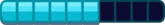
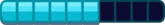
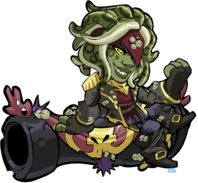
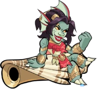
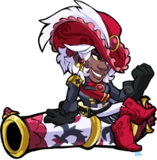
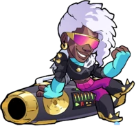
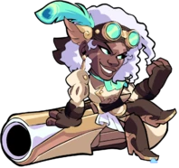

A Rainha Corsária
"Navegando pelos mares da aventura em busca de glória e ouro!"


 

Sidra e sua tripulação monstruosa governaram os mares de Thera, desde os blocos de gelo de Ikrusk até o Portão Atlante. A Corsair Queen era lendária por seus ataques destemidos, habilidade magistral com um cutelo e uma abordagem dura, mas justa, para andar na prancha. Em um ousado ataque ao reino submarino de Poseidon, Sidra roubou um diamante gigante, The Eye of Charybdis, de sob o bico de seu guardião, The Great Kraken. Ela perdeu The Eye (junto com uma cidade e um sanduíche de presunto) em uma aposta de bar, mas ela continua amaldiçoada a ser caçada para sempre por um kraken vingativo e envergonhado. Sempre engenhosa, Sidra canaliza a busca implacável do kraken para punir seus inimigos. Ela até permitiu que o Almirante de Ferro a capturasse para que ela pudesse rir enquanto o kraken despedaçava sua frota em busca dela. Sidra chegou a Valhalla no tempo caótico antes do Grande Torneio ser criado. Ela deu uma olhada ao redor, comandou um navio, recrutou uma tripulação e retomou a vida de pirata em seu novo lar. Este novo Terror do Mar Asgardiano foi a gota d'água para Odin, e ele criou o Grande Torneio em uma tentativa de canalizar o impulso guerreiro dos Valhallans. Por enquanto, Sidra foi atraída de volta para Valhalla pelos maravilhosos prêmios do Torneio, especificamente o ouro. Mas seu navio está pronto para navegar em uma enseada secreta. Teros foi o primeiro monstro da tripulação que Sidra recrutou, e sua lealdade a ela é inabalável.




